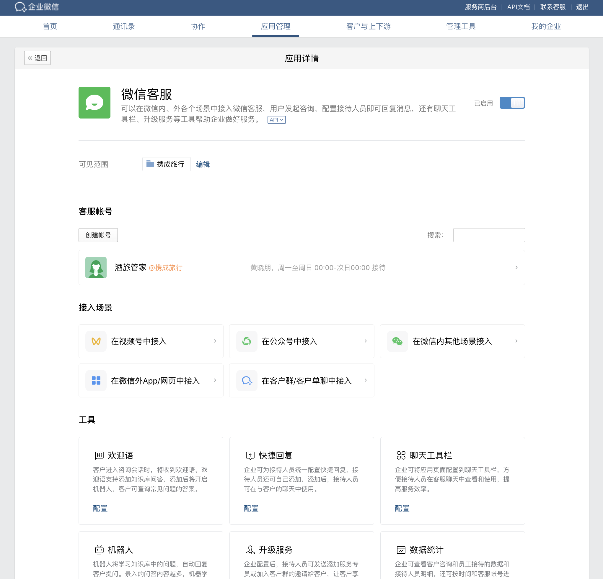
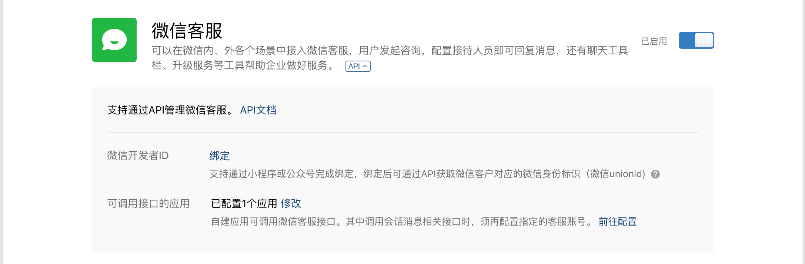
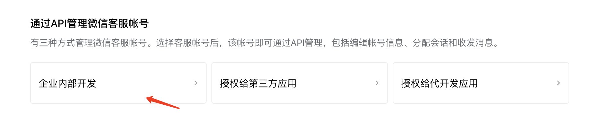

目录
什么是微信客服如何在各场景中接入微信客服如何使用API什么是微信客服
微信客服由腾讯微信团队为企业打造，用于满足企业的客服需求，帮助企业做好客户服务。企业可以在微信内、外各个场景中接入微信客服，用户可以发起咨询，企业可以进行回复。
企业在使用微信客服时，有两种选择。可选择在微信客服管理后台处独立使用微信客服，或选择由企业微信接管微信客服账号和收发消息。选择由企业微信接管微信客服时，可实现：
- 可将企业员工配置为微信客服的接待人员，在企业微信里接收和回复用户在微信内、外发起的咨询消息
- 可在企业微信里通过API来管理微信客服账号、分配客服会话和收发客服消息等。
- 可使用客服工具栏、快捷回复、「升级服务」等工具
此文档将介绍在企业微信使用微信客服时的相关接口能力。

如何在各场景中接入微信客服
企业可获取对应的客服链接，在视频号、微信搜一搜、网页等微信内和微信外场景接入微信客服，各场景的用户点击后即可向对应的微信客服发起咨询。各场景的接入方式如下：
1、在微信内接入
2、在微信外接入
如何使用API
企业可按自己的实际需求来使用API。主要分两种使用方式：
1、企业可通过API来自行来分配客服会话和收发消息，实现更个性化和更复杂的消息路由等。此种方式操作如下：
- 企业管理员可以在“企业微信管理后台-应用管理-微信客服应用”处，点开“API”小按钮，在“可调用接口的应用”中选择自建应用，配置后该应用才可以调用微信客服的接口。
 - 在“通过API管理微信客服账号-企业内部开发”处，设置需要通过自建应用API管理的客服账号。设置成功后，该账号的微信客户与企业接待人员的所有消息与事件都回调给企业，官方原生设置的接待规则将暂不生效，企业注意及时调用API来收发消息、分配会话等，以保证正常服务。

注意：- 企业须已在在企业微信里使用微信客服且已开启API，才能正常在企业微信里调用微信客服相关API。
- 企业在管理后台“通过API管理微信客服账号-企业内部开发”设置后，企业才能自行通过API管理该客服账号的会话消息。
- 客服的接待人员需要在应用的可见范围内 API接口才可正常使用。否则会返回错误码60030
2、企业不通过API分配客服会话和收发消息，在微信客服原生能力的基础上，只做简单开发。比如企业可结合自己的业务系统，做一个客户详情页给接待人员使用，帮助接待人员更高效服务客户。查看详情
- 此种开发方式，企业管理员只需在“企业微信管理后台-微信客服应用-API”处进行开发设置，在可调用接口的应用处配置对应的自建应用。